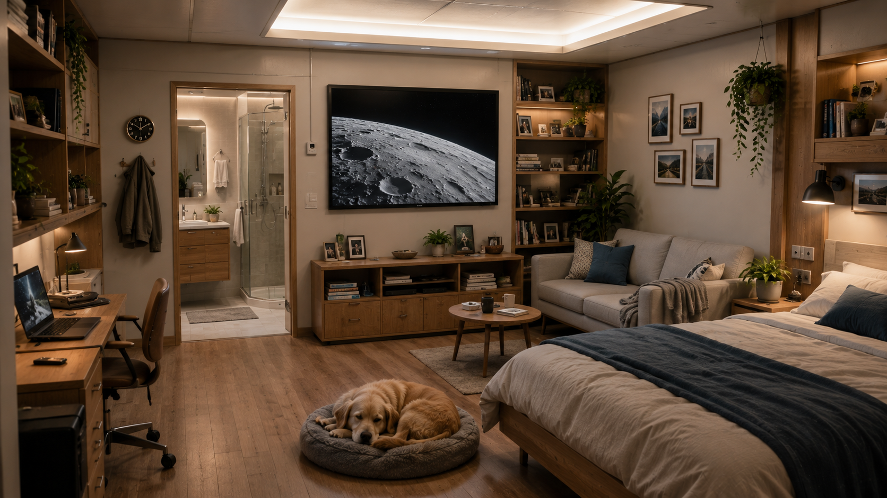
Somewhere to live
Private Quarters
A home, not a capsule. Personal quarters in a habitat ring — a real bed, a desk, shelves of books, a screen "window" to the Moon, and a place for the dog to sleep.
Concept Explorations
Early concept explorations of life aboard Aegis Station. These illustrate the kinds of spaces a permanent orbital community needs — how they're laid out is still open. The rings spin to about 1g at the floor, so the feel inside is familiar: bright, green, and built for people.
These are visions, not blueprints. The habitat rings provide Earth-normal gravity at the floor; the non-rotating central hub stays weightless — so a few of these spaces float.

A home, not a capsule. Personal quarters in a habitat ring — a real bed, a desk, shelves of books, a screen "window" to the Moon, and a place for the dog to sleep.
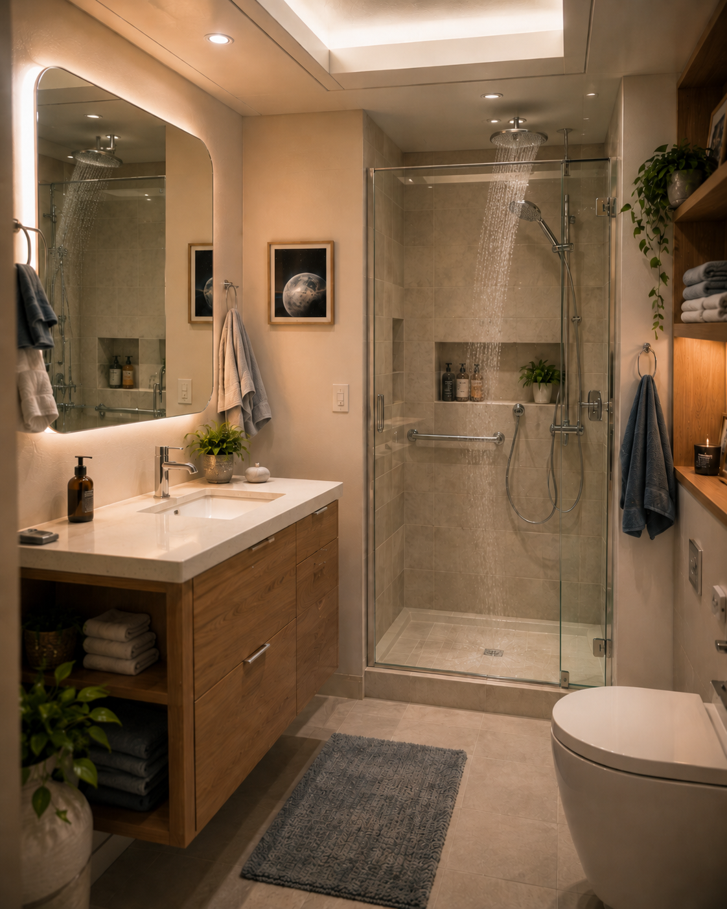
The detail that tells you this is real: a proper shower and sink. At about 1g on the ring floor, water falls and drains the way it should — no space-toilet improvisation required (give or take the spin's faint sideways lean).
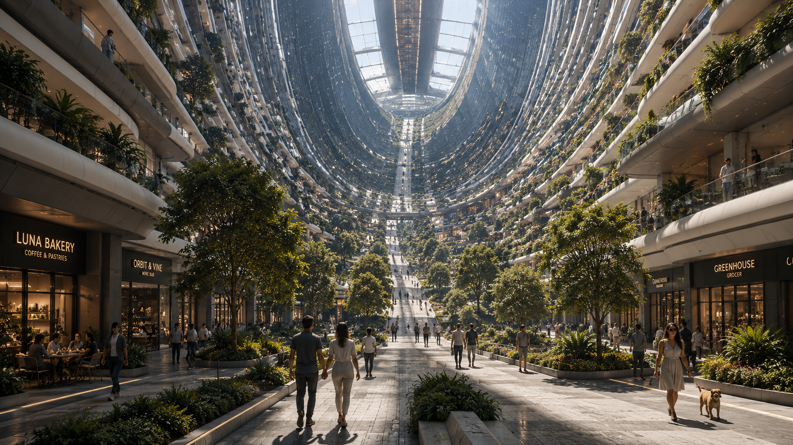
Step out the door onto a tree-lined high street — a bakery, a wine bar, a grocer — with the whole neighborhood curving up and away overhead. The clearest look at what the rotating ring really does: an avenue that becomes the sky.
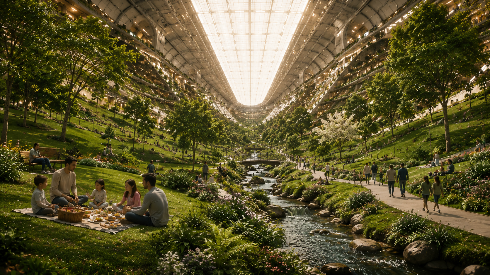
An open green valley that wraps overhead — the ring floor rising away on both sides beneath a full-spectrum daylight ceiling. Room to walk, picnic, and forget you're in orbit.
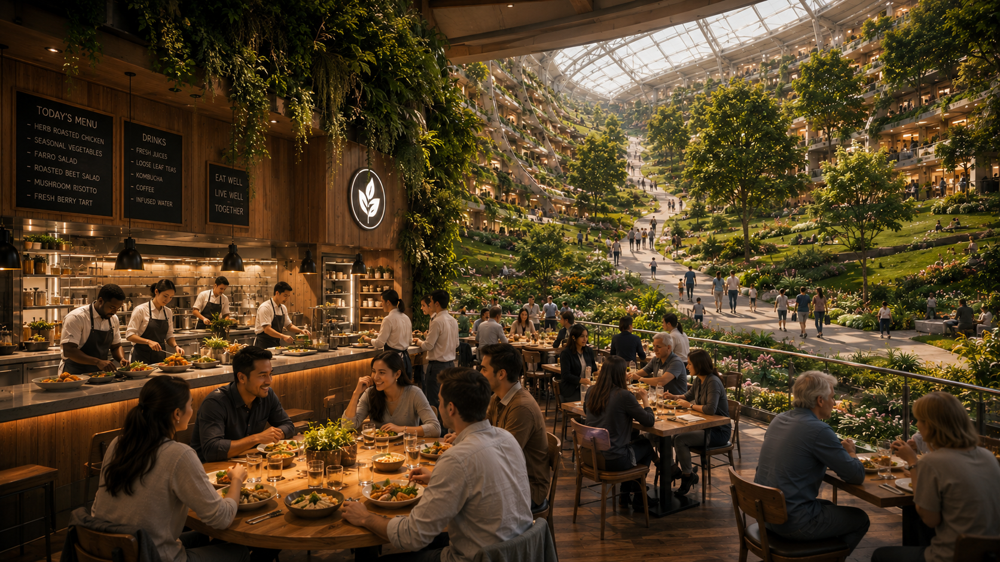
Somewhere to gather and share a meal, the planted ring curving up beyond the tables. A food culture, not ration packs — the social heart of a community in orbit.
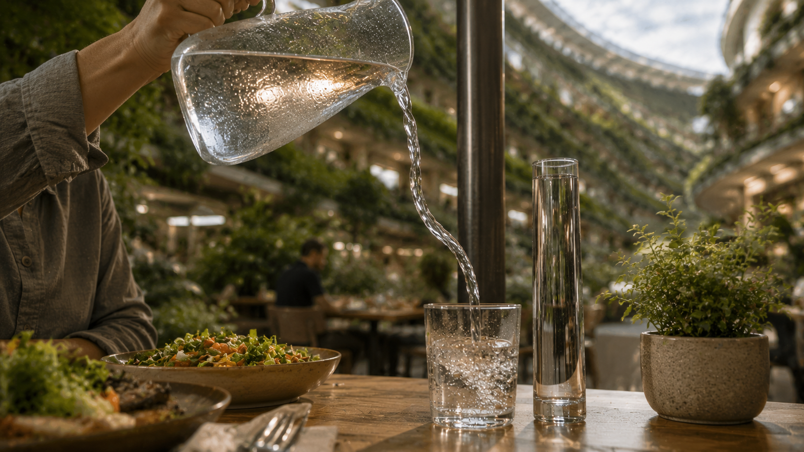
Pour a glass of water and the spin shows itself: the falling stream bows sideways instead of dropping straight down. At a gentle ~1–2 RPM the rings feel like solid ground — but never quite hide that they're turning.
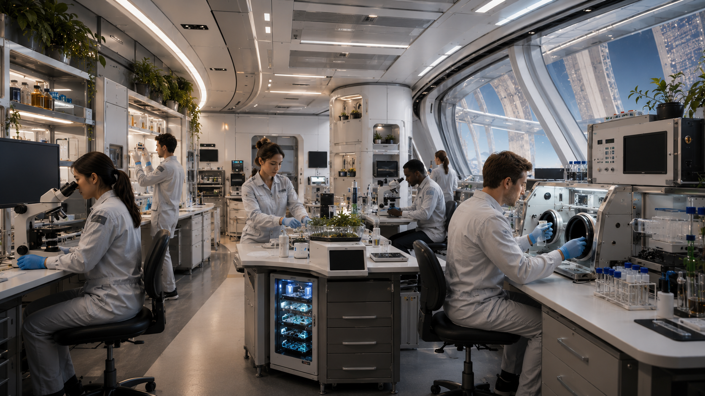
A working research lab — bright, busy, and matter-of-fact. Science isn't industry; it's part of the life of the place — people with real work to do, and somewhere good to do it.
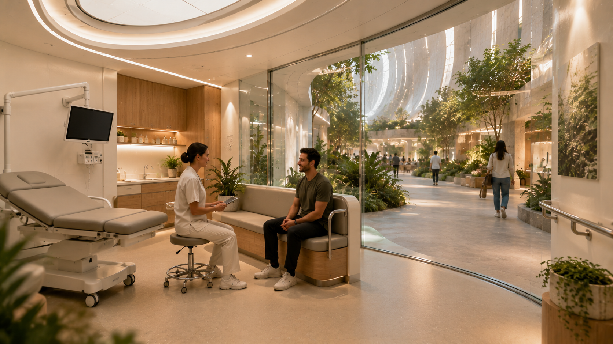
Open, calm, and human — a clinic that looks out onto the ring's greenery instead of sealing you in a sickbay. Step-free and accessible, more wellness center than ward.
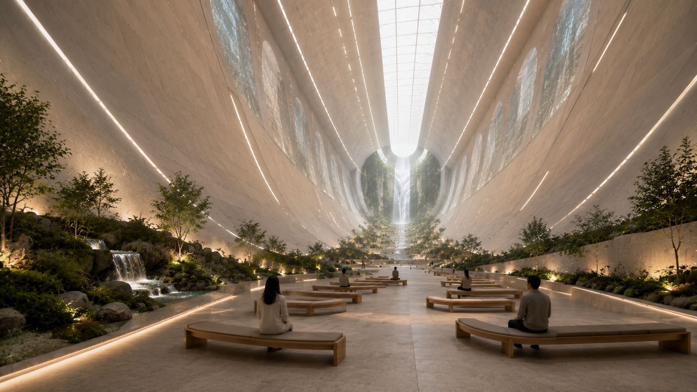
A non-denominational chapel that uses the whole ~40 m height of the ring — soaring a dozen storeys to a daylit ceiling, with water and green at the floor. Open to everyone, quiet by design. You even feel about 10% lighter near the top.
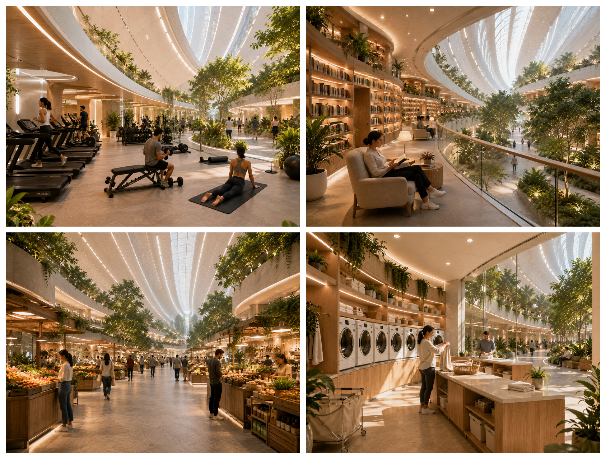
A gym, a library, a market hall, a laundry — the unglamorous things that turn a station into a town. None of it sealed in a box; all of it open to the ring's green.
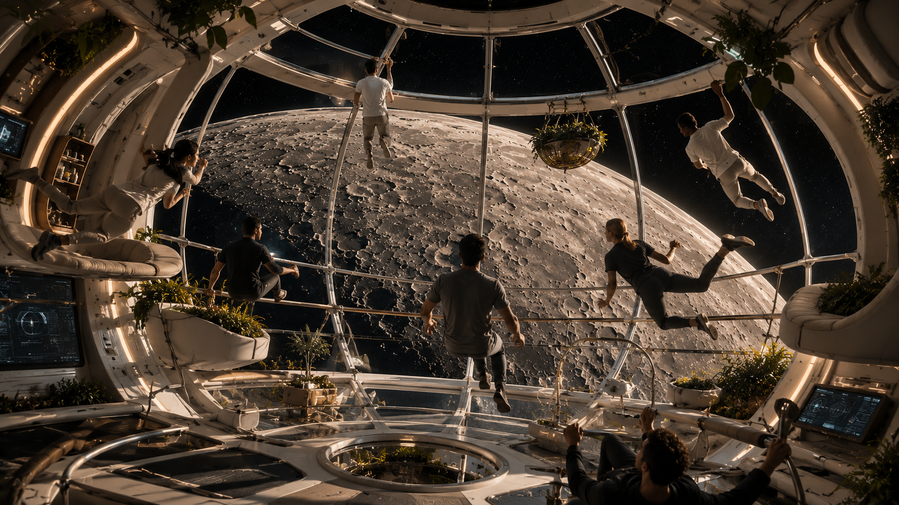
A microgravity observation dome in the station's non-rotating hub, the Moon filling the glass. The one place you float to with no purpose but to look.
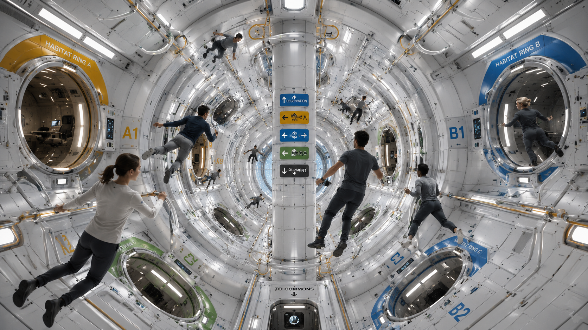
The weightless heart of the station, where the spinning rings meet the still central hub. Push off, glide past the ring gateways, and arrive at the next neighborhood.